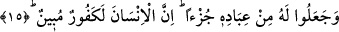
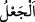
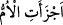
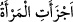

bindiği zaman da “Onun akıp gitmesi de durması da Allah’ın adıyladır, Rabbim
elbette bağışlayandır, esirgeyendir.” (Hûd, 11/41) “Allah’ı gereği gibi bilemediler.
Halbuki kıyâmet günü yer tamamen onun avucu içindedir. Göklerde sağ elinde
dürülmüştür. O, onların ortak koştuklarından uzak ve yücedir” (ez-Zümer, 39/67)
âyetlerini duâ olarak okurdu.
15. Ama onlar, kullarından bir kısmını, O’nun bir cüzü kıldılar. Gerçekten insan
apaçık bir nankördür.
“Ama onlar” Arap kabîleleri, “Allah cinlerle hısım oldu da bundan melekler doğdu”
yahut Benî Müleyh kabîlesinin yaptığı gibi “melekler Allah’ın kızlarıdır” diyerek
“kullarından bir kısmını O’nun bir cüzü kıldılar. Gerçekten insan apaçık bir
nankördür.” Nankörlüğü açık ve ileri seviyededir. Yahut küfrünü izhar edip ortaya
koymaktadır.
Bazıları bu âyetin Benî Müleyh kabîlesini reddetmek üzere geldiğini söylemişlerdir.
Çünkü bu kabîle meleklerin Allah’ın kızları olduğunu söylemişlerdir. “Müleyh”
kelimesi Zübeyr gibi olup Huzâa kabîlesinin bir koludur. Burada “__WORD__/ca’l” kelimesi,
bir konuda hüküm verip ona inanmak demektir. Mesela “ben Zeyd’i insanların en
fazîletlisi yaptım” demek “ben buna böyle hükmettim ve bu işi böyle vasfettim”
demektir.
Burada bahsedilen “kullar”dan murad, meleklerdir. Kamus’ta şöyle denmiştir: Cüz;
ba’z ve bir bölüm demektir. Araplar “__WORD__/eczeeti’l-ümm” derler ki “anne kız
doğurdu” demektir. Buna göre “kullarından bir kısmını, O’nun bir cüzü kıldılar” yani
O’na kızları nispet ettiler, anlamındadır. Bunun için Zeccâc, Müberrid ve Maverdî gibi
âlimler, “cüz” kelimesinin Arap dili uzmanları nezdinde “kızlar” mânâsına geldiğini
söylemişlerdir. Kadın, kız çocukları doğurduğunda “__WORD__/eczeeti’l-mer’etü”
denilir. Bunun için Râgıb “bir şeyin cüzü, o şeyin bütünün kuvvet bulduğu unsurdur”
açıklamasını yapmıştır.
Cârullah Zemahşerî şöyle demiştir: “Cüz” kelimesinin dişiler-kızlar olarak tefsir
edilmesi ve bunun arap lügatında dişiler-kızlar olduğunu iddiâ etmek tefsirlerin
bid’atlarındandır. Bu, Araplara karşı uydurulmuş bir yalandır. Uydurma bir yorumdan
başka bir şey değildir. Bununla da yetinmeyip bu “cüz” kelimesinden ”__WORD__/eczeeti’l-mer’etü” ifâdesini ortaya attılar. Sonra bir beyt uydurarak gûyâ bu mânâya
istidlal etmiş oldular. Şöyle dediler:
Hamde bir gün bir kız çocuğu doğursa şaşırmayın.